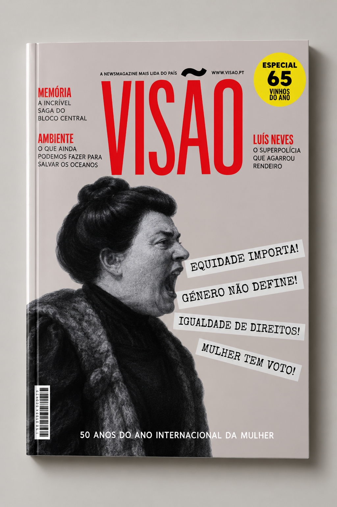
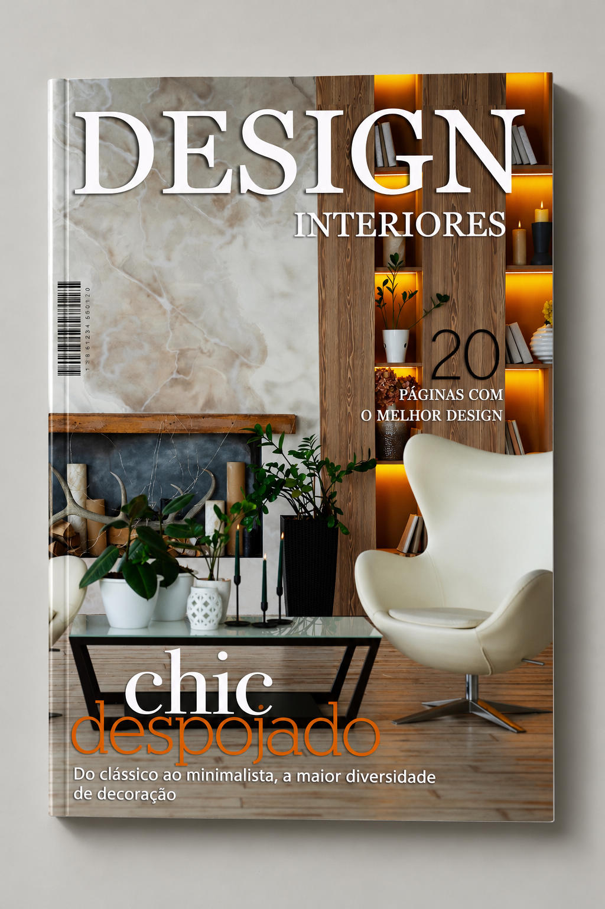
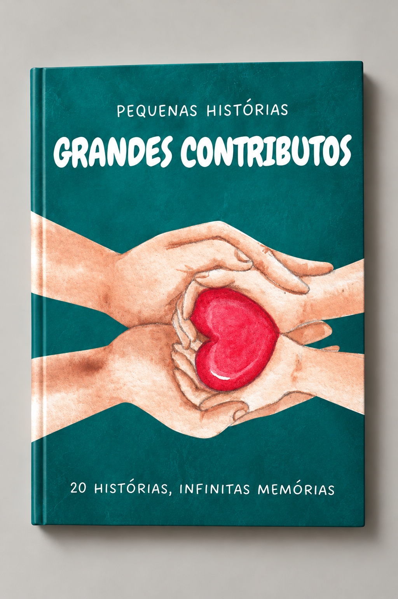
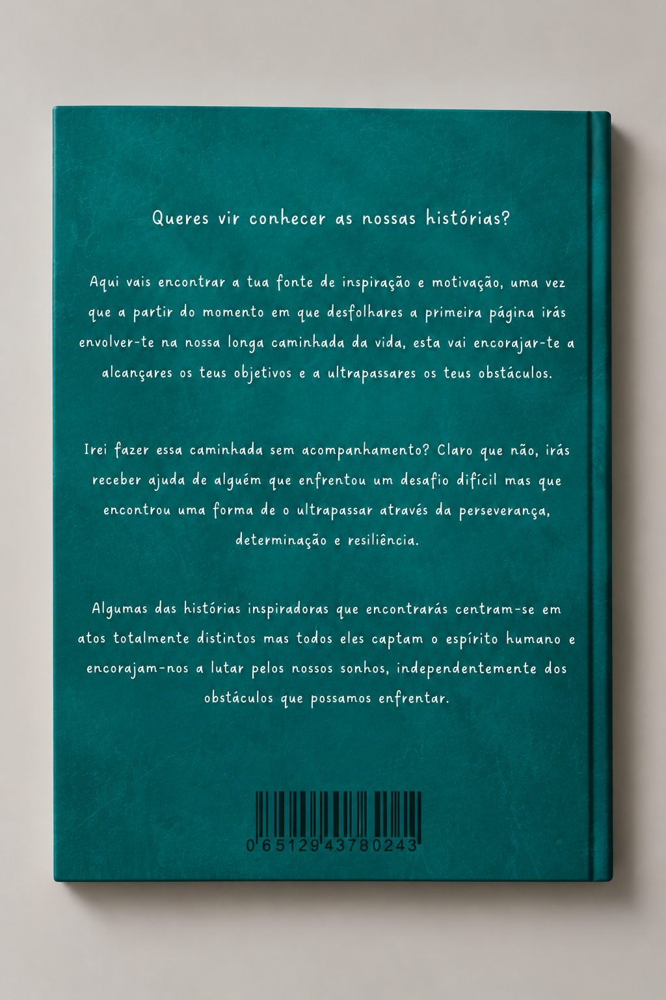

02.
Editorial
Nesta seleção de projetos editoriais, exploro a composição gráfica, a tipografia e a organização visual de diferentes conteúdos, desenvolvidos através do Adobe InDesign e Adobe Illustrator.



